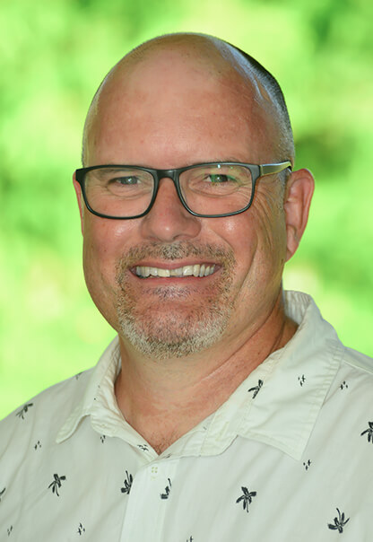
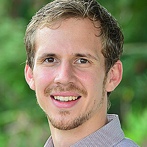
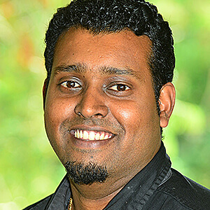
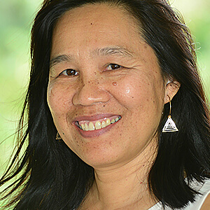
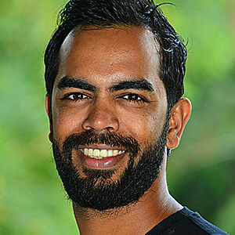

People
The core of our school, its beating heart, is the people that make up the Lighthouse community. All of these diverse groups working together make something beautiful.

Students
Parents and Guardians
Staff
Donors
Currently, Lighthouse is eligible to receive Corporate Social Responsibility (CSR) funds from Mauritian companies due to its alignment with various CSR objectives. If you would like to learn more about CSR or just how generally to participate in Lighthouse’s unique model, please do contact us.
Community
Leadership Team
Mr Matthew Pearce is the Head of Secondary at Lighthouse.

Matthew Nissley - Dean of Students, Secondary School
Yogesh Caulleechurn - Dean of Curriculum, Secondary School
Caroline Shiu Koon Sien - Coordinator of Curriculum, Primary School
Ashley Jhurree – Coordinator of Students, Primary School
Board of Directors
Lighthouse is governed by a group of directors who work on the strategic vision, infrastructure, fundraising and identification of talent to ensure integrity, relevance and viability. The directors contribute their time and skills on a voluntary basis.
The Board of Directors are:
Former Staff, Students and Alumni
-
Students
We believe our students are enriched by from sitting alongside others with a wide range of backgrounds. Our student body is made up of people with differing academic aptitudes, races and ethnic groups; practicing every major world religion and no religion at all; a majority of Mauritians complemented by over 20 other nationalities; and the spectrum of the socio-economic scale. -
Parents and Guardians
Our culture encourages and expects parents and guardians to participate in their child’s learning. We believe it is parents and guardians who are a child’s first authority, and a school works together with them in partnership in the best interest of the child. -
Staff
Our staff members, teaching and non-teaching, are the “living curriculum.” We believe that teachers are foremost learners themselves and they transmit their passion for learning to children. Our staff members are experts at forming meaningful relationships with learners that follow them through their time at Lighthouse. -
Donors
Lighthouse Primary and Secondary School belongs 100% to The Lighthouse Trust, a charitable trust registered in Mauritius. Although it is a fee-paying school, we rely on donations to supplement fees and tuition, which we attempt to keep as low as possible. Since its inception Lighthouse has aimed to provide financial need-based scholarships to a significant proportion of its students. For more information on why we do this, please refer to Education and Equity: How our Fees and Scholarships Work.
Currently, Lighthouse is eligible to receive Corporate Social Responsibility (CSR) funds from Mauritian companies due to its alignment with various CSR objectives. If you would like to learn more about CSR or just how generally to participate in Lighthouse’s unique model, please do contact us. -
Community
A school does not happen in a vacuum – its surrounding community and national context give input and also allow its practical outworkings take shape. It is our sincere wish at Lighthouse that our students grow not just to serve themselves but to consider and implement ways to listen to and benefit people around them. Regular exposure to guest experts, expression of the arts and culture as well as real-world application of ideas enables students to engage in projects such as community clean-ups and planting of public gardens. We also believe the school is responsible for teaching environmental respect and responsibility, particularly for our nearby forest and river. -
Leadership Team
Mrs Jessica Akehurst is the Interim Head of Primary at Lighthouse. BioJessica Akehurst
Mrs Jessica Akehurst is the Interim Head of Primary at Lighthouse. Mrs Akehurst, a Canadian, has served most recently in leadership in a group of 5 international schools, comprising 4,000 students, in Qatar. Mrs Akehurst has also served in schools in China, Poland and Canada, and has a passion for inspiring and promoting excellence in teaching and learning. She holds a B.A. and M.A. in Education as well as a B.A. in Music, along with a National Award (Canada) for coordination of Special Educational Needs. She believes healthy relationships are vital in our community and particularly enjoys supporting Lighthouse families. She lives in Mauritius with her husband and two sons.
Mr Matthew Pearce is the Head of Secondary at Lighthouse. BioMatthew Pearce
Mr Pearce joins Lighthouse after serving in leadership at Cornerstone College in Adelaide, Australia for 15 years. He has also taken leadership of their digital learning framework implementation and technology in education is an area of special interest. Mr Pearce is also a Design and Technology specialist while enjoying curriculum development and instructional leadership in all areas. He is lives in Mauritius with his wife Kristen, who is also a teacher at Lighthouse, and they have two children in Australia. Mr Pearce enjoys getting to know students as individuals and believes a well-rounded education can be transformative in the lives of high school students.
Matthew Nissley - Dean of Students, Secondary School
Yogesh Caulleechurn - Dean of Curriculum, Secondary School
Caroline Shiu Koon Sien - Coordinator of Curriculum, Primary School
Ashley Jhurree – Coordinator of Students, Primary School
-
Board of Directors
Lighthouse is governed by a group of directors who work on the strategic vision, infrastructure, fundraising and identification of talent to ensure integrity, relevance and viability. The directors contribute their time and skills on a voluntary basis.
The Board of Directors are:
Corinne Ah Yow BioCorinne Ah Yow
Corinne Ah Yow brings a wealth of accounting and operational management experience to the Lighthouse board. Corinne was the COO of a leading company in the window covering and soft flooring industry for more than 20 years. She has been also an accountant in a manufacturing and a conglomerate of services. Corinne took an early retirement to use her talents, skills and time for God through the educational field. She is particularly driven by giving her personal best and professional experience to enterprises like Lighthouse which seek a social good.
Darnelle Pretorius BioDarnelle Pretorius
Darnelle Pretorius has been teaching and leading in primary and secondary schools for over 30 years, including as Principal of Lighthouse for two years. She is currently the Principal of St Stephen’s School’s Carramar campus in Perth, Australia. Dr Pretorius is an educator, researcher, and proponent of education as the pathway to support young people to change the world. She is particularly interested in educational innovation and inclusion. She has completed a Masters of Education and a Doctoral Thesis at the University of Western Australia.
Stephen Andrews BioStephen Andrews
Stephen Andrews has loved Africa and the Indian Ocean Islands ever since he spent some years growing up in Kenya and was able to visit the Seychelles and Mauritius. He went on to complete a Bachelor of Business in his native Australia, majoring in Accounting, and after further study, was admitted as a Certified Practicing Accountant (with CPA Australia). Stephen has lived in Mauritius with his family for 10 years, managing a consulting and accounting business.
Marc Dalais BioMarc Dalais
Marc Dalais is Chief Executive Officer of the Celero Group, a logistics and shipping agency group operating in Mauritius and Madagascar, which he founded in 2009. His career in logistics spans various companies in South Africa, France and Mauritius after university studies in Business and Commerce in South Africa. Marc has also been active in various trade associations and boards, and currently serves on the board of CIEL Ltd. Marc is passionate about social enterprises and education.
Susanna Dalais BioSusanna Dalais
Susanna Dalais co-founded Lighthouse with Marc in 2009. Prior to starting the school, Susanna managed group strategy for a financial services and information technology group, Loita, focused on sub-Saharan Africa. Her areas of practice included capital markets transactions and bank management in various African countries. She holds a M.A. in International Relations and International Economics from Johns Hopkins University and was a Fulbright scholar. A dual US-Mauritian citizen, Susanna is interested in issues of social justice, politics and societal transformation.
-
Former Staff, Students and Alumni
We’ve noticed Lighthouse people form a special bond with each other that endures even after they leave Mauritius. If you want to stay connect with the Lighthouse community in this way, please join our Facebook group to stay linked to old friends and keep up with school developments.
Partner Organisations